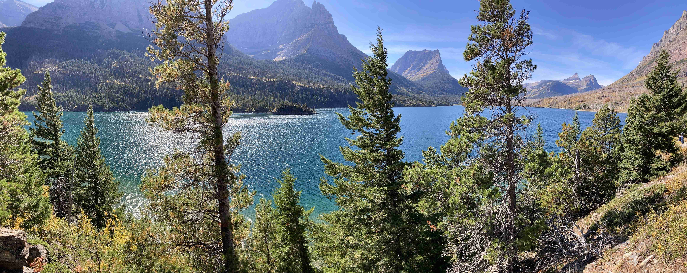

This was a trip to the Northwest of the USA. We flew from Sacramento, CA to Spokane, WA and stayed the first few days with Janet's brother Tim and his wife Nanne. We rented a car and drove to our first stop, Glacier National Park, MT. We came back to Spokane for a day and then drove to Anacortes, WA to catch the ferry over to Friday Harbor on San Juan Island. Leaving the San Juan Islands, we caught the ferry back to Anacortes and then drove to Bellingham, WA to spend a couple of days with Janet's niece Arianne and her husband Shane. Lastly, we flew back to Sacramento from Seattle, WA.

This was a trip to the Southwest of the USA. We flew from Sacramento, CA to Phoenix, AZ, where we rented a car. First stop was the Grand Canyon, AZ, then Mesa Verde, CO, Canyon de Chelly, AZ and finally stopping in Sedona, AZ.

This was a trip to various islands of Greece. First stop was Mykonos, then Naxos, Santorini and finally stopping in Crete.

This was our first cruise, to Alaska, starting in Vancouver. We cruised for 7 days, visiting Ketchican, Juneau, Skagway, Glacier Bay and stopping in Seward. We then continued on land to Denali National Park for a few days. We ended up in Anchorage.

Janet and I took our second trip to Europe visiting the following places: Amsterdam (Netherlands), Bruges (Belgium), Colmar (France), Strasbourg (France), Interlaken (Switzerland), Luxembourg (Luxembourg) and Haarlem (Netherlands).

Janet and I took our first trip to Europe visiting the following places: Luzerne (Switzerland), Hall (Austria), Salzburg (Austria), Hallstatt (Austria), Cesky Krumlove (Czech Repupublic), Prague (Czech Republic), Vienna (Austria) and Budapest (Hungary).

Our daughter, Heather, was on a world trip, so we met her in Peru to share part of her trip. Places we visited were Lima, Cusco, Ollantaytambo, Aguas Calientes and Machu Picchu. After Peru, we flew to Costa Rica to visit the jungle and rain forest sides of the island.
On our trip to Spain, we visited Madrid, Toledo, Ronda, Granada, Valencia, Montserrat and Barcelona.
On our trip to Italy, we visited Coreglia, Pisa, Cinque Terre, Venice, Siena and Florence.